11 Visualisation de données
Dans ce chapitre, nous allons explorer les rudiments de la visualisation de données avec la librairie Matplotlib.
Pour le moment, ces notes ne parleront pas des graphiques dynamiques que l’on peut réaliser en lien avec des librairies JavaScript, comme D3.js. Dans une prochaine version également, nous verrons comment réaliser des graphiques avec seaborn (https://seaborn.pydata.org/).
Pour avoir accès rapidement à un type de graphique que l’on souhaite réaliser, on peut se référencer à cette excellente gallerie : https://python-graph-gallery.com/.
Les adeptes du logiciel et langage de programmation R seront heureux de pouvoir retrouver une grammaire graphique comme celle proposée par le package R ggplot2 introduit par Hadley Wickham. En effet, il existe une librairie Python nommée ggplot : http://ggplot.yhathq.com/.
Pour explorer graphiquement ses données, il peut être intéressant d’investir un peu de temps dans la librairie Altair (https://altair-viz.github.io/). Pour une introduction en vidéo : https://www.youtube.com/watch?v=aRxahWy-ul8.
11.1 Graphiques avec matplotlib
Pour utiliser les fonctionnalités offertes par matplotlib (https://matplotlib.org/), il est nécessaire de charger certains modules. Le plus commun est le sous-module pyplot, auquel on attribue fréquemment l’alias plt :
import matplotlib.pyplot as pltPour réaliser un graphique avec la fonction pyplot, on commence par créer une figure en définissant sa zone, puis on ajoute et / ou modifie ses éléments à l’aide de fonctions offertes par pyplot.
Pour illustrer les fonctionnalités de matplotlib, nous allons avoir besoin de générer des valeurs, à l’aide de la librairie numpy, que l’on charge :
import numpy as np11.1.1 Géométries
11.1.1.1 Lignes
Pour tracer des lignes sur un repère cartésien, on utilise la fonction plot(), à qui on fournit les coordonnées en abscisses et en ordonnées en premiers paramètres. On définit avec le troisième paramètre la géométrie.
Par défaut, la géométrie réalisée est une courbe bleue :
x = np.arange(-10, 11)
y = x**2
plt.plot(x, y)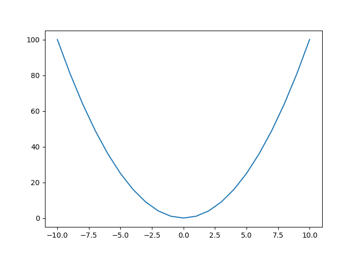
Une fois le graphique affiché, on peut le refermer avec la fonction close() :
De la même manière, on peut préciser la gémoétrie comme suit :
Pour ajouter une courbe sur le graphique, on fait appel plusieurs fois à la fonction plot() :
y_2 = -x**2
plt.plot(x, y, "-")
plt.plot(x, y_2, "-")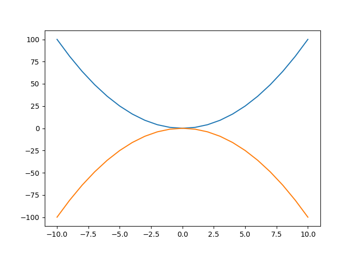
11.1.1.1.1 Paramètres esthétiques
11.1.1.1.1.1 Couleur de lignes
Pour modifier la couleur d’une ligne, on utilise le paramètre color :
plt.plot(x, y, color="red")
plt.plot(x, y_2, color="#00FF00")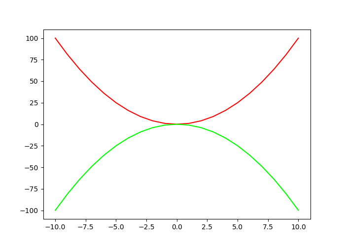
Commme on peut le constater, la référence à la couleur peut se faire en faisant appel à son nom (la liste des couleurs disposant d’un nom est accessibles sur la documentation de matplotlib). On peut aussi utiliser un code hexadécimal pour faire référence à une couleur.
11.1.1.1.1.2 Épaisseur des lignes
L’apaisseur des lignes peut être modifiée à l’aide du paramètre linewidth, à qui l’on fournit une valeur numérique :
plt.plot(x, y, linewidth = 2)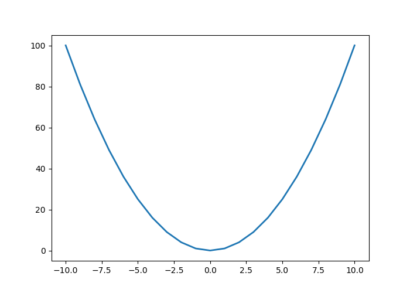
11.1.1.1.1.3 Type de lignes
Pour changer de type de ligne, on modifie le troisième paramètre de la fonction. On l’a vu, par défaut, une ligne est tracée, ce qui revient à indiquer comme troisième paramètre : '-'. Le Tableau 11.1 indique les différents format possibles pour la ligne.
| Valeur | Description |
|---|---|
- |
Ligne pleine |
-- |
Tirets |
-. |
Points et tirets |
: |
Pointillés |
Par exemple, pour avoir une interpolation linéraire effectuée entre nos points avec une représentation graphique effectuée à l’aide de tirets :
plt.plot(x, y, "--")On peut aussi spécifier le type de ligne à l’aide du paramètre linestyle, en lui indiquant une des valeurs renseignées dans le Tableau 11.2
| Valeur | Description |
|---|---|
- ou solid |
Ligne pleine |
-- ou dashed |
Tirets |
-. ou dashdot |
Points et tirets |
: ou dotted |
Pointillés |
None |
Aucune ligne de tracée |
plt.plot(x, y, linestyle="dashed")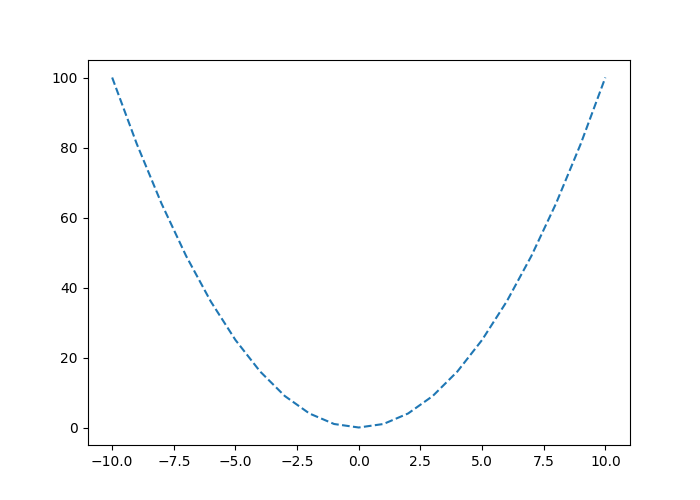
11.1.1.1.1.4 Marqueurs
Le Tableau 11.3 indique quant à lui des formats que l’on peut spécifier comme marqueurs à chaque point présent sur la courbe.
| Valeur | Description |
|---|---|
. |
Points |
, |
Pixels |
o |
Cercles vides |
v |
Triangles pointant vers le bas |
^ |
Triangles pointant vers le haut |
< |
Triangles pointant vers la gauche |
> |
Triangles pointant vers la droite |
1 |
‘tri_down’ |
2 |
‘tri_up’ |
3 |
‘tri_left’ |
4 |
‘tri_right’ |
s |
Carré |
p |
Pentagone |
* |
Astérisque |
h |
Hexagone 1 |
H |
Hexagone 2 |
+ |
Symbole plus |
x |
Symbole multiplier |
D |
Losange |
d |
Losange fin |
| |
Ligne verticale |
_ |
Ligne horizontale |
Par exemple, avec des cercles vides :
plt.plot(x, y, "o")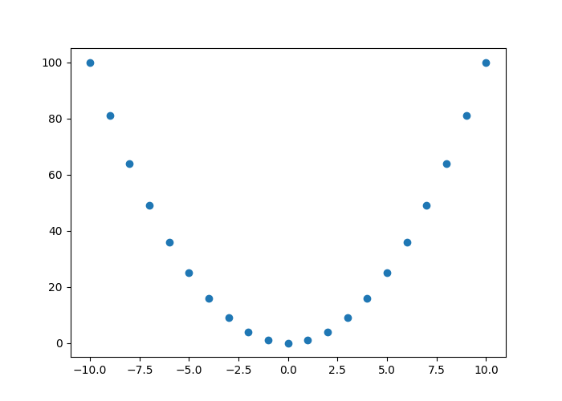
On peut noter qu’il est possible de combiner les types de lignesdu Tableau 11.1 avec des types de marqueurs du Tableau 11.3 :
plt.plot(x, y, "--v")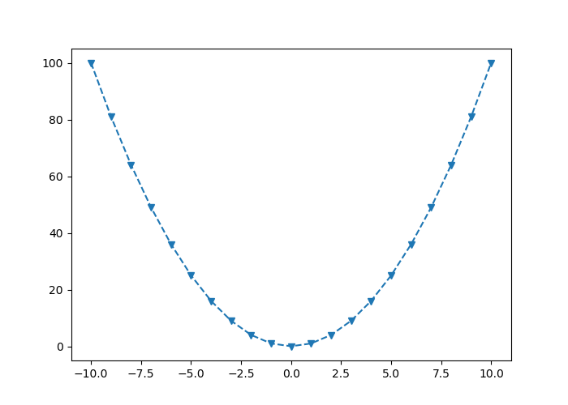
Pour contrôler de manière plus précise les marqueurs, on peut utiliser les paramètres suivants :
marker: renseigne le type de marqueur (c.f. Tableau 11.3) ;markerfacecolor: la couleur désirée pour les marqueurs ;markersize: taille des marqueurs.
plt.plot(x, y, marker="o", markerfacecolor = "red", markersize = 10)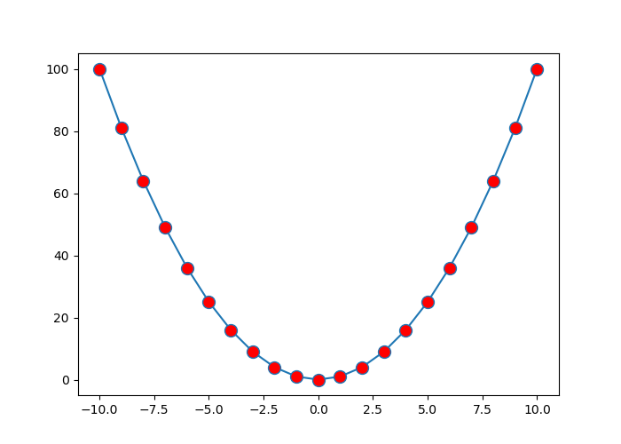
11.1.1.2 Nuage de points
Un des graphiques que l’on rencontre très fréquemment est le nuage de points. Pour en réaliser un, on peut faire appel à la fonction scatter(), à qui l’on indique les cordonnées (x,y) des points ainsi que quelques paramètres optionnels de forme ou d’esthétisme.
scatter() mentionne que la fonction plot() (c.f. Section 11.1.1.1) est plus rapide pour effectuer des nuages de points dans lesquels la couleur ou la taille des points de varie.
x = np.arange(-10, 11)
y = x**2
plt.scatter(x, y)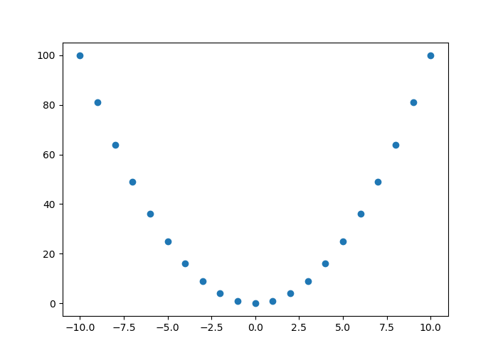
Pour changer la forme des marqueurs, on l’indique via le paramètre marker (c.f. Tableau 11.3 pour les valeurs possibles) :
x = np.arange(-10, 11)
y = x**2
plt.scatter(x, y, marker="+")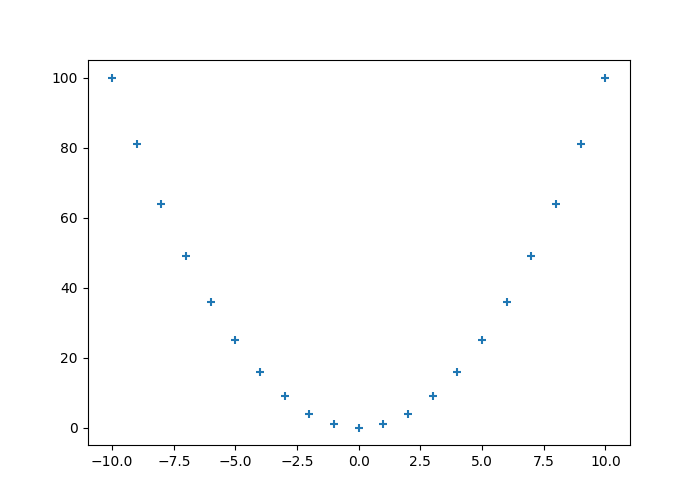
11.1.1.3 Taille et couleur
La taille des points est ajustable via le paramètre s, tandis que la couleur se modifie via le paramètre color (ou par son alias c) :
x = np.arange(-10, 11)
y = x**2
plt.scatter(x, y, marker="+", color = "red", s = 2)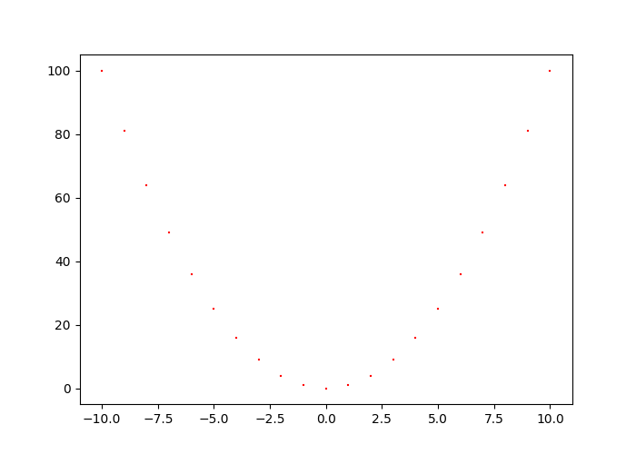
On peut associer une couleur et une taille spécifiques à chaque point :
x = np.random.rand(30)
y = np.random.rand(30)
z = np.random.rand(30)
couleurs = np.random.choice(["blue", "black", "red"], 30)
plt.scatter(x, y, marker="o", color = couleurs, s = z*100)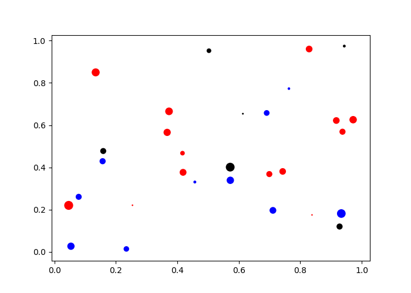
11.1.1.4 Histogrammes
Pour réaliser un histogramme avec pyplot, on utilise la fonction hist() :
x = np.random.randn(1000)
plt.hist(x)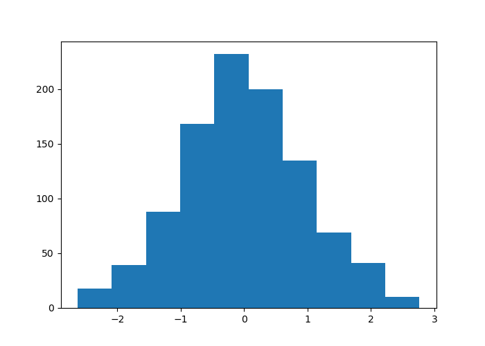
On peut préciser avec le paramètre bins soit le nombre de classes, soit leurs bornes :
plt.hist(x, bins=30)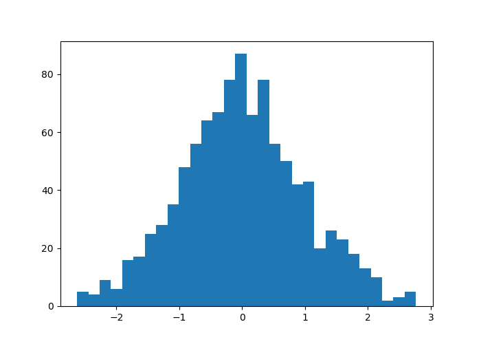
Et avec les bornes :
bins = np.arange(-4, 4, .1)
plt.hist(x, bins=bins)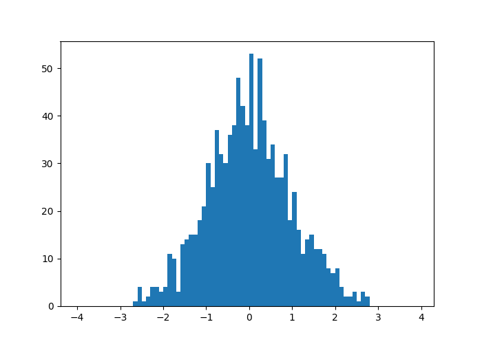
L’orientation se change via le paramètre orientation, en indiquant soit 'vertical' (par dédaut), soit 'horizontal'
plt.hist(x, orientation='horizontal')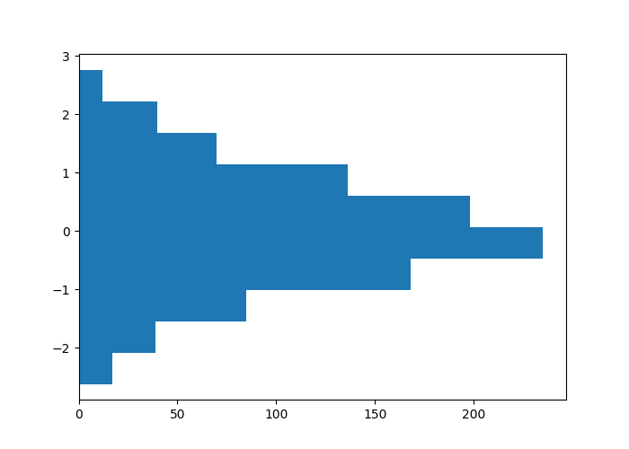
11.1.1.4.1 Paramètres esthétiques
Pour changer la couleur de remplissage, on utilise le paramètre color ; pour ajouter une couleur délimitant les barres, on utilise le paramètre edgecolor ; pour définir l’épaisseur du contour, on utilise le paramètre linewidth :
x = np.random.randn(1000)
plt.hist(x, color = "#00FF00", edgecolor='black', linewidth=1.5)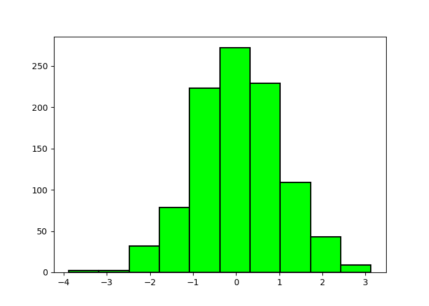
11.1.1.5 Diagrammes en bâtons
Pour réaliser des diagrammes en bâtons, pyplot propose la fonction bar().
pays = ["France", "Italie", "Belgique", "Allemagne"]
chomage = [9.3, 9.7, 6.5, 3.4]
plt.bar(pays, chomage)
Pour un diagramme horizontal, on utilise la fonction barh() de la même manière :
plt.barh(pays, chomage)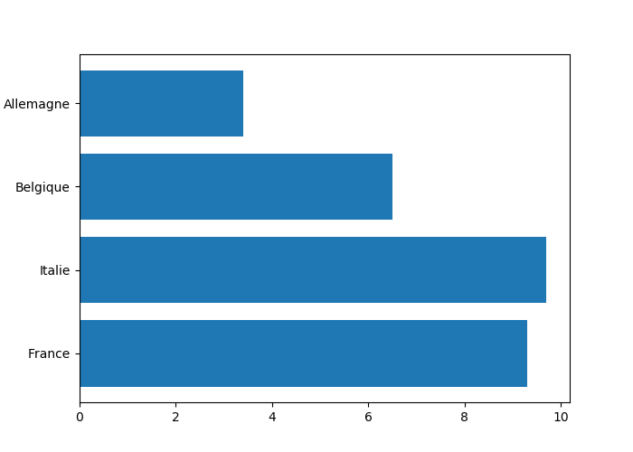
11.1.1.5.1 Plusieurs séries sur un diagramme en bâtons
Pour comparer plusieurs séries côte-à-côte, il est nécessaire d’emprunter des notions qui ne seront introduites qu’à la Section 11.1.3 (le code est fourni ici plutôt comme un aide-mémoire pour effectuer ce genre de graphiques).
pays = ["France", "Italie", "Belgique", "Allemagne"]
chomage_f = [9.1, 11.2, 6.4, 2.9]
chomage_h = [9.5, 9, 6.6, 3.8]
# Position sur l'axe des x pour chaque étiquette
position = np.arange(len(pays))
# Largeur des barres
largeur = .35
# Création de la figure et d'un set de sous-graphiques
fig, ax = plt.subplots()
r1 = ax.bar(position - largeur/2, chomage_f, largeur)
r2 = ax.bar(position + largeur/2, chomage_h, largeur)
# Modification des marques sur l'axe des x et de leurs étiquettes
ax.set_xticks(position)
ax.set_xticklabels(pays)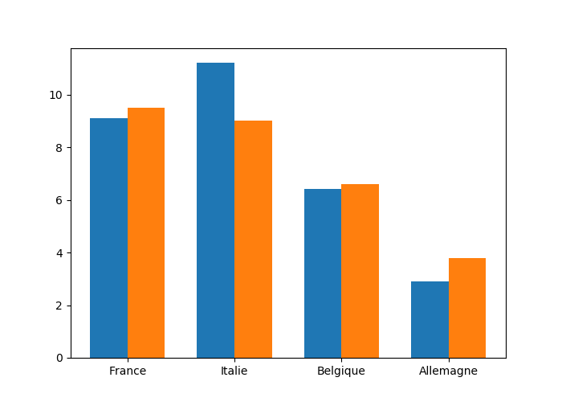
11.1.1.5.2 Diagrammes en bâtons empilés
Pour empiler les valeurs des séries, on préciser à l’aide du paramètre bottom la valeur de départ pour la série :
pays = ["France", "Italie", "Belgique", "Allemagne"]
nb_chomeurs_f = [1.307, 1.185, .577, .148]
nb_chomeurs_h = [1.46, 1.338, .878, .179]
plt.bar(pays, nb_chomeurs_f)
plt.bar(pays, nb_chomeurs_h, bottom = nb_chomeurs_f)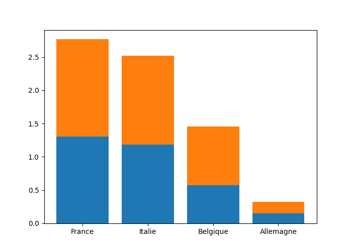
11.1.1.5.3 Paramètres esthetiques
Pour changer la couleur de remplissage, on utilise le paramètre color ; pour la couleur du contour, on renseigne le paramètre edgecolor ; pour la largeur du contour, on s’appuie sur le paramètre linewidth :
pays = ["France", "Italie", "Belgique", "Allemagne"]
nb_chomeurs_f = [1.307, 1.185, .577, .148]
nb_chomeurs_h = [1.46, 1.338, .878, .179]
plt.bar(pays, nb_chomeurs_f, color = "purple",
edgecolor = "black", linewidth = 1.5)
plt.bar(pays, nb_chomeurs_h, bottom = nb_chomeurs_f)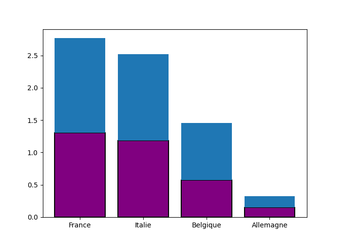
11.1.1.6 Boxplots
Pour réaliser une boîte à moustaches (ou boxplot), pyplot offre la fonction boxplot() :
x = np.random.randn(1000)
plt.boxplot(x)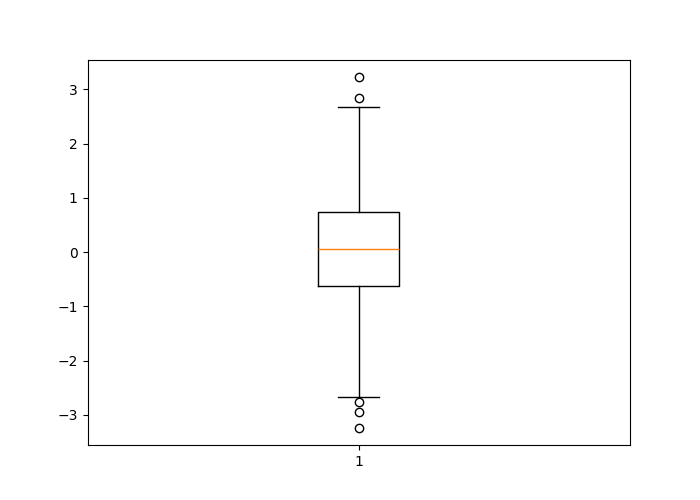
En renseigant à False la valeur du paramètre vert, le boxplot est tracé horizontalement :
plt.boxplot(x, vert = False)
11.1.2 Plusieurs graphiques sur une figure
Pour placer des graphiques les uns à côté des autres, on utilise la fonction subplot(). Les graphiques seront placés comme dans une matrice, avec un nombre de lignes n_lignes et un nombre de colonnes n_colones. On peut indiquer les dimensions de cette matrice en paramètres de la fonction subplot(), à l’aide de la syntaxe suivante :
où courant indique l’indice du graphique actif. Voyons à travers un exemple le fonctionnement :
x = np.arange(-10, 11)
y = -x**2
# Matrice de dimension 3x2 de graphiques
# Ligne 1, colonne 1
plt.subplot(3, 2, 1)
plt.plot(x, y, color = "red")
# Ligne 1, colonne 2
plt.subplot(3, 2, 2)
plt.plot(x, y, color = "orange")
# Ligne 2, colonne 1
plt.subplot(3, 2, 3)
plt.plot(x, y, color = "yellow")
# Ligne 2, colonne 2
plt.subplot(3, 2, 4)
plt.plot(x, y, color = "green")
# Ligne 3, colonne 1
plt.subplot(3, 2, 5)
plt.plot(x, y, color = "blue")
# Ligne 3, colonne 2
plt.subplot(3, 2, 6)
plt.plot(x, y, color = "violet")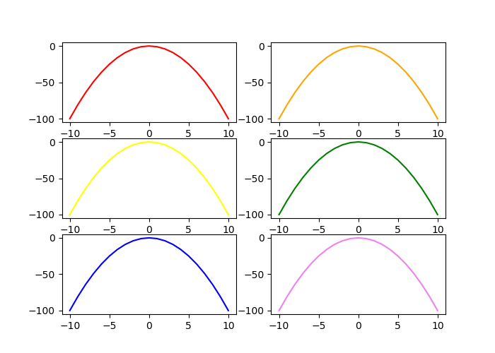
Rappelons-nous que les matrices sont remplies lignes par lignes en Python, ce qui permet de bien comprendre la valeur du numéro de graphique actif.
En utilisant la fonction subplots() (attention au “s” final du nom de la fonction qui la différencie de la précédente), il est possible de produire une matrice de graphiques également, en procédant de la manière suivante :
f, ax_arr = plt.subplots(2, 2)
ax_arr[0, 0].plot(x, y, color = "red")
ax_arr[0, 1].plot(x, y, color = "orange")
ax_arr[1, 0].plot(x, y, color = "yellow")
ax_arr[1, 1].plot(x, y, color = "green")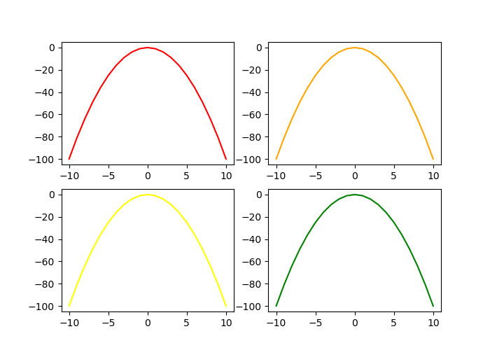
Cette manière de procéder offre l’avantage de préciser facilement le partage d’axes entre les différents sous-graphiques, via les paramètres sharex et sharey :
f, ax_arr = plt.subplots(2, 2, sharey=True, sharex = True)
ax_arr[0, 0].plot(x, y, color = "red")
ax_arr[0, 1].plot(x, y, color = "orange")
ax_arr[1, 0].plot(x, y, color = "yellow")
ax_arr[1, 1].plot(x, y, color = "green")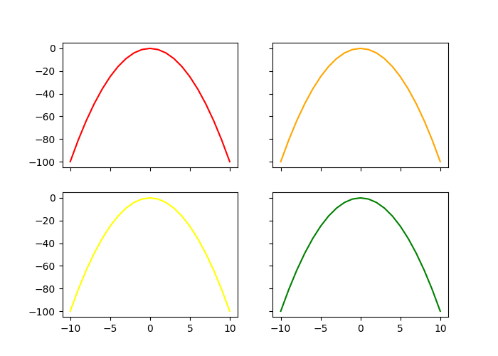
11.1.3 Éléments de graphiques
Jusqu’ici, nous avons regardé comment créer différentes géométries, mais nous n’avons pas touché aux axes, à leurs valeurs ou étiquettes (sauf lors de l’exemple non expliqué des diagrammes côte-à-côte), ou encore modifié les légendes ou titres.
11.1.3.1 Titre
Pour ajouter un titre au graphique, on peut utiliser la fonction title() :
x = np.arange(-10, 11)
y = x**2
y_2 = -y
plt.plot(x, y)
plt.plot(x, y_2)
plt.title("Représentation graphique de $y = x^2$ \net de $y = -x^2$")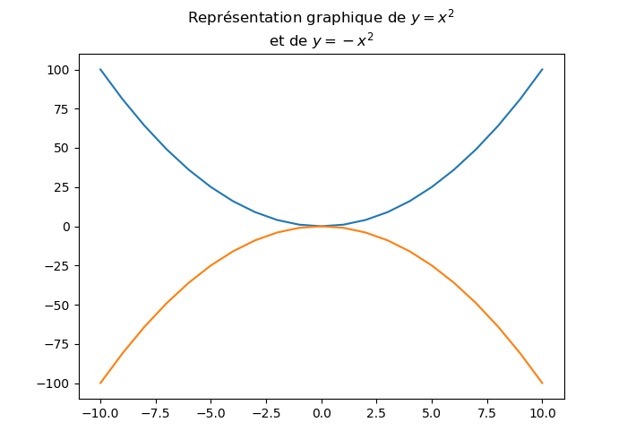
11.1.3.2 Axes
Les fonctions xlabel() et ylabel() permettent d’ajouter des étiquettes aux axes :
x = np.arange(-10, 11)
y = x**2
plt.plot(x, y)
plt.xlabel("Valeurs de $x$")
plt.ylabel("Valeurs de $y$")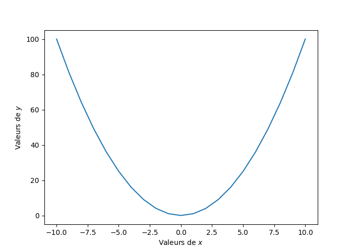
11.1.3.2.1 Limites
Pour contrôler les limites des axes, on utilise la fonction axis(), en précisant les paramètres xmin, xmax, ymax, ymin et ymax, désignant, respectivement, les bornes inférieures et supérieures de l’axe des absisses et les borenes inférieures et supérieures de l’axe des ordonnées :
plt.axis(xmin = 0, xmax = 5, ymin = -1, ymax = 30)
11.1.3.2.2 Marques et étiquettes
Les fonctions xticks() et yticks() permettent d’obtenir ou de modifier les marques de l’axe des abscisses et de l’axe des ordonnées, respectivement.
x = np.arange(-10, 11)
y = x**2
plt.plot(x, y)
plt.xticks(np.arange(-10, 11, step = 4))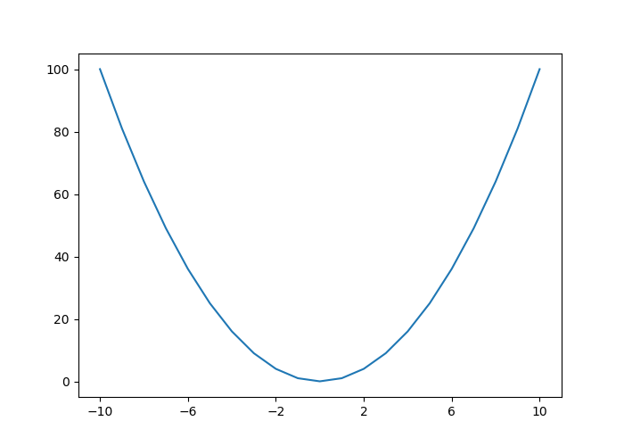
Il peut être pratique de récupérer les positions et les étiquettes d’un graphique pour pouvoir les modifier, par exemple pour définir l’espacement entre chaque marque :
plt.plot(x, y)
locs_x, labels_x = plt.xticks()
locs_y, labels_y = plt.yticks()
loc_x_new = np.arange(locs_x[0], locs_x[-1], step = 5)
loc_y_new = np.arange(locs_y[0], locs_y[-1], step = 10)
plt.xticks(loc_x_new)
plt.yticks(loc_y_new)
On peut également modifier les étiquettes des marques :
plt.plot(x, y)
locs_x, labels_x = plt.xticks()
locs_y, labels_y = plt.yticks()
loc_x_new = np.arange(locs_x[0], locs_x[-1], step = 5)
loc_y_new = np.arange(locs_y[0], locs_y[-1], step = 10)
labels_x_new = list()
for i in np.arange(1, len(locs_x)):
labels_x_new.append("x : " + str(locs_x[i]))
plt.xticks(loc_x_new, labels_x_new)
plt.yticks(loc_y_new)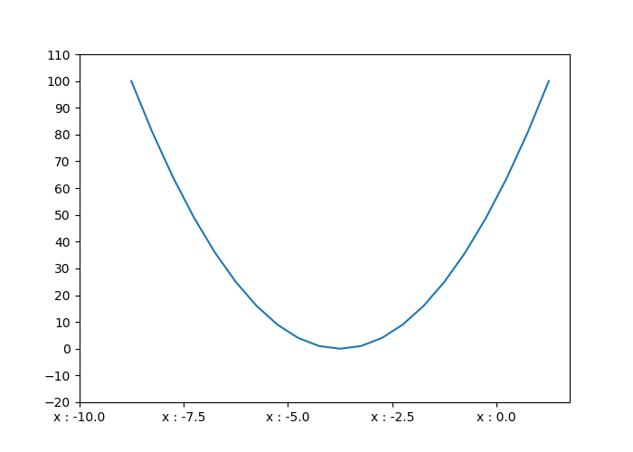
11.1.3.2.3 Grilles
Pour rajouter une grille, on utilise la fonction grid() :
x = np.arange(-10, 11)
y = x**2
plt.plot(x, y)
plt.grid()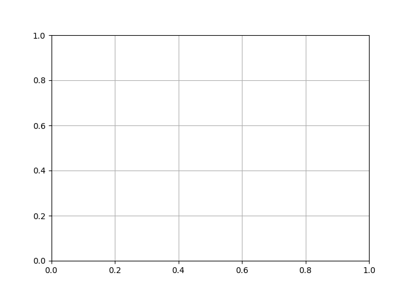
Le paramètre axis permet de définir si l’on désire une grille pour les deux axes (both, par défaut), uniquement pour les abscisses (x), ou uniquement pour les ordonnées (y) :
plt.plot(x, y)
plt.grid(axis = "y")On peut paraméter les lignes majeures ou mineurs de la grille :
plt.plot(x, y)
plt.minorticks_on()
plt.grid(which = "major", axis = "y", color = "black")
plt.grid(which = "minor", axis = "y", color = "red", linestyle = "--")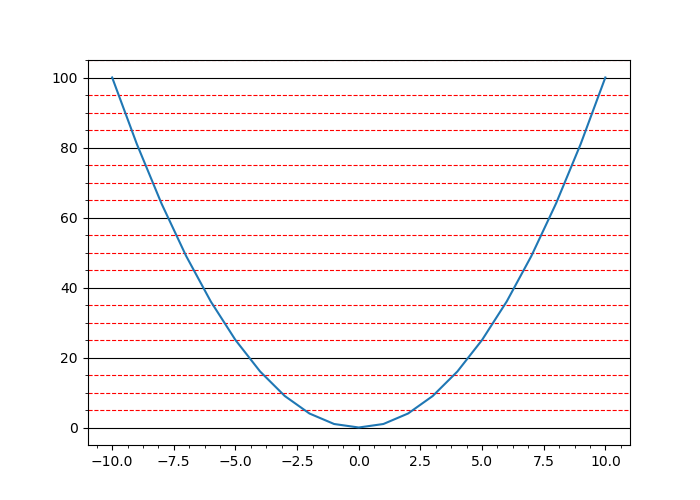
11.1.3.3 Légendes
Lorsque l’on désire ajouter une légende, on précise l’étiquette de celle-ci au paramètre label dans l’appel de la fonction plot, puis on fait appel à la fonction legend() :
x = np.arange(-10, 11)
y = x**2
y_2 = x**3
plt.plot(x, y, label = "carré ($x^2$)")
plt.plot(x, y_2, label = "cube ($x^3$)")
plt.legend()
plt.legend()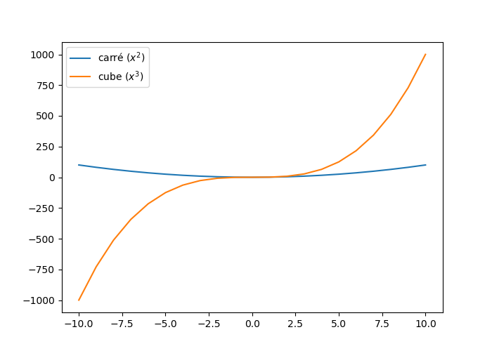
Pour préciser la position de la légende, on peut s’appuyer sur le paramètre loc dans la fonction legend(), en indiquant une valeur telle que reportée dans le Tableau 11.4.
best | 0 | Laisser Python optimiser le positonnement |
upper right | 1 | En haut à droite |
upper left | 2 | En haut à gauche |
lower left | 3 | En bas à gauche |
lower right | 4 | En bas à droite |
right | 5 | À droite |
center left | 6 | Centré au milieu à gauche |
center right | 7 | Centré au milieu à droite |
lower center | 8 | Centré en bas |
upper center | 9 | Centré en haut |
center | 10 | Centré |Table: (#tab:pyplot-legendes-loc) Formats des lignes
Par exemple, pour centrer la légende au milieu, en bas du graphique :
x = np.arange(-10, 11)
y = x**2
y_2 = x**3
plt.plot(x, y, label = "carré ($x^2$)")
plt.plot(x, y_2, label = "cube ($x^3$)")
plt.legend(loc = "lower center")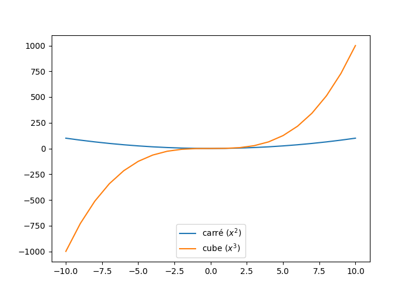
11.1.4 Dimensions
Pour définir les dimensions d’une figure, on renseigne le paramètre figsize de la fonction figure(). On lui fournit un n-uplet d’entiers dont le premier élément correspond à la longueur et le second la hauteur (les valeurs sont en pouces) :
x = np.arange(-10, 11)
y = x**2
plt.figure(figsize=(10,6))
plt.plot(x, y)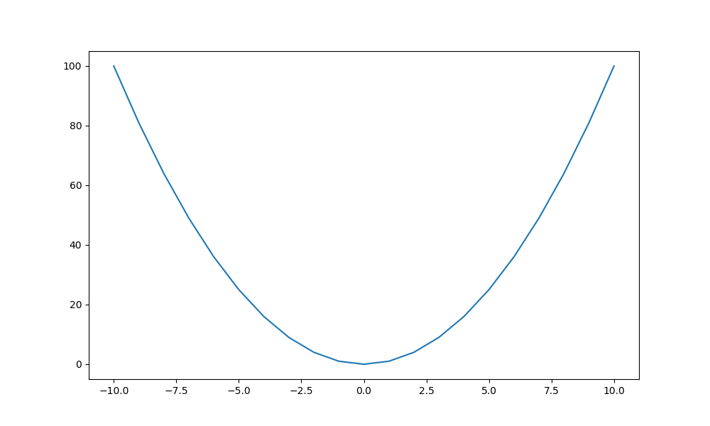
11.1.5 Enregistrement
Pour sauvegarder un grapgique, on peut utiliser la fonction plt.savefig(). On précise le chemin vers le fichier à créer, en indiquant l’extension du fichier désiré (e.g., png ou pdf) :
x = np.arange(-10, 11)
y = x**2
y_2 = x**3
plt.figure(figsize=(10,6))
plt.plot(x, y, label = "carré ($x^2$)")
plt.plot(x, y_2, label = "cube ($x^3$)")
plt.legend(loc = "lower center")
plt.savefig("test.pdf")L’extension indiquée (dans l’exemple présent, pdf) détermine le format de fichier en sortie. On peut utiliser les extensions indiquées dans les clés du dictionnaire retourné par l’instruction suivante (les valeurs donnant une description du type de fichier) :
print(fig.canvas.get_supported_filetypes())## {'ps': 'Postscript', 'eps': 'Encapsulated Postscript', 'pdf': 'Portable Document Format', 'pgf': 'PGF code for LaTeX', 'png': 'Portable Network Graphics', 'raw': 'Raw RGBA bitmap', 'rgba': 'Raw RGBA bitmap', 'svg': 'Scalable Vector Graphics', 'svgz': 'Scalable Vector Graphics', 'jpg': 'Joint Photographic Experts Group', 'jpeg': 'Joint Photographic Experts Group', 'tif': 'Tagged Image File Format', 'tiff': 'Tagged Image File Format'}